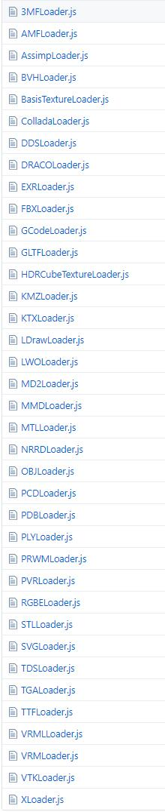

加载器 Loader
加载器Loader用来加载3D模型或其他文件，不同格式的模型使用不同的加载器。
所有加载器都继承自父类Loader
Loader的核心方法为load(url, onLoad, onProgress, onError)
- url - A string containing the path/URL of the model file.
- onLoad - (optional) A function to be called after the loading is successfully completed. The function receives the loaded Object3D as an argument.
- onProgress - (optional) A function to be called while the loading is in progress. The function receives a XMLHttpRequest instance, which contains total and loaded bytes.
- onError - (optional) A function to be called if an error occurs during loading. The function receives error as an argument.
加载管理器LoadingManager在构造加载器时被自动应用
加载管理器用于追踪和显示有关加载总体状态的信息，而不是处理已加载的数据
加载管理器的核心方法：onStart, onLoad, onProgress, onError
ThreeJS支持的加载器包括：
